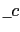
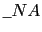
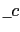
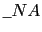

suivant: Bibliothèque des constantes physiques
monter: Les constantes physiques
précédent: Les constantes physiques
Table des matières
Index
La notation des constantes physiques
Les noms des constantes physiques commencent et se terminent par le
caractère _ ("underscore"). Il ne faut pas confondre les constantes
physiques avec les constantes symboliques, par exemple, e, sont des
constantes symboliques alors que
, sont des constantes
physiques.
sont des
constantes symboliques alors que
, sont des constantes
physiques.
On tape :
_c_
On obtient la vitesse de la lumière dans le vide :
299792458_m*s^-1
On tape :
_NA_
On obtient le nombre d'Avogadro :
6.0221367e23_gmol^-1
Documentation de giac écrite par Renée De Graeve